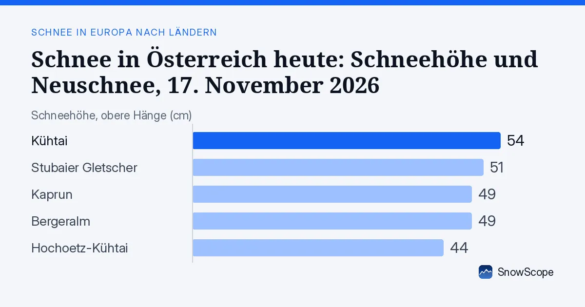
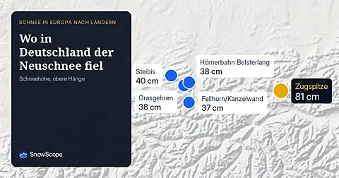
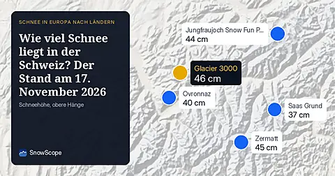

Schneeberichte · Schnee in Europa nach Ländern
Schnee in Europa nach Ländern: Kühtai hat heute auf etwa 2.223 m 20 cm. Normal sind am 17. November dort 33 cm: Der Schnee liegt bei 61 % der …
Schnee nach Ländern heute
Die weißesten Länder heute: Polen (100 %), Slowakei (100 %) und Österreich (99 %).
Am meisten Neuschnee in der kommenden Woche: Norwegen (44 cm), Bulgarien (36 cm) und Nordmazedonien (32 cm).
| Land | Weiß | Schneereichstes Skigebiet | Nächste 7 Tage |
|---|---|---|---|
| Polen | 100 % | Kasprowy Wierch · 35 cm | 2 cm |
| Slowakei | 100 % | Vysoké Tatry · 32 cm | 1 cm |
| Österreich | 99 % | Stubaier Gletscher · 72 cm | 3 cm |
| Ungarn | 99 % | Dobogókő Sípálya · 8 cm | 0 cm |
| Ukraine | 99 % | Драгобрат · 25 cm | 3 cm |
| Finnland | 95 % | Pyhä · 28 cm | 10 cm |
| Schweden | 95 % | Björkliden · 137 cm | 19 cm |
| Slowenien | 95 % | Sella Nevea · 56 cm | 2 cm |
| Norwegen | 94 % | Riksgränsen · 166 cm | 44 cm |
| Tschechien | 86 % | Ski areál Karolinka · 27 cm | 2 cm |
| Andorra | 84 % | Canaro · 23 cm | 3 cm |
| Schweiz | 73 % | Les Marecottes · 98 cm | 2 cm |
| Kroatien | 55 % | Platak · 14 cm | 5 cm |
| Rumänien | 51 % | Muntele Mic · 42 cm | 6 cm |
| Deutschland | 41 % | Zugspitze · 86 cm | 2 cm |
| Großbritannien | 40 % | Nevis Range · 33 cm | 16 cm |
| Italien | 36 % | Courmayeur · 75 cm | 3 cm |
| Frankreich | 24 % | La Grave · 158 cm | 3 cm |
| Bulgarien | 22 % | Bansko · 30 cm | 36 cm |
| Montenegro | 19 % | Ski centar Savin kuk · 39 cm | 19 cm |
| Bosnien und Herzegowina | 12 % | Jahorina olimpijski centar · 16 cm | 15 cm |
| Serbien | 12 % | Tornik · 18 cm | 23 cm |
| Kosovo | 11 % | Brezovica · 22 cm | 28 cm |
| Albanien | 9 % | – | 22 cm |
| Nordmazedonien | 8 % | Скијачки центар Попова шапка · 21 cm | 32 cm |
| Griechenland | 6 % | Kaimaktsalan · 30 cm | 30 cm |
| Spanien | 4 % | Candanchu · 39 cm | 1 cm |
| Irland | 0 % | – | 0 cm |
| Portugal | 0 % | – | 0 cm |
Österreich hinkt hinterher: Kühtai hat 20 cm, an einem normalen 17. November sind es 33 cm

Kühtai hat heute auf etwa 2.223 m 20 cm. Normal sind am 17. November dort 33 cm: Der Schnee liegt bei 61 % der üblichen Höhe.
Hinter einem normalen Jahr
Ein langsamer Start ist häufig und sagt wenig über den Januar. Vorerst auf die höchsten Lifte und beschneite Pisten setzen.
Schnee bedeckt am 17. November in Österreich etwa 15.400 km², 4.150 km² weniger seit gestern. Anders gesagt: 30 % des kartierten Berglands sind weiß.


Die Schneebedeckung in Deutschland ist in einer Woche von 5.460 auf 10.730 km² angewachsen. Die Allgäuer Alpen führen mit 47 cm Neuschnee in 72 Stunden an (Stand: 22. November).

Österreich hat in sieben Tagen 11.600 km² Schnee hinzugewonnen. Stubaier Gletscher führt mit 67 cm an. Daten vom 22. November 2026.
Schweizer Alpen mit 71 Prozent Schneebedeckung gegenüber 18 Prozent in Frankreich am 22. November. Wallis hält 166 cm in 72 Stunden.

In den vergangenen 72 Stunden fiel Neuschnee ungleichmäßig verteilt über Deutschland: 39 cm in den Allgäuer Alpen, 31 cm in den Bayrischen Alpen, 16 cm im Schwarzwald. Daten vom 21.11.2026.

Österreich hat Schnee auf 56 Prozent der gemessenen Flächen am 21. November, weit vor Deutschland mit 7 Prozent. Vorarlberg erhielt in drei Tagen 47 cm Neuschnee.


Deutschland hat am 20. November 1.790 km² Schneebedeckung, Österreich führt mit 44 Prozent Weiß. Die Allgäuer Alpen erhielten in 72 Stunden 34 cm.

Vorarlberg erhielt in den drei Tagen bis 20. November den meisten Neuschnee in Österreich. Bis zu 26 cm fielen großflächig, als ein Sturm über die Alpen zog.

Glacier 3000 führt die Schweiz mit 124 cm an, nachdem in 72 Stunden 128 cm Schnee gefallen sind. Die Schneebedeckung sprang am 20. November auf 64% im ganzen Land.

Österreichs Schneedecke ist diese Woche auf 48 Prozent angewachsen. Ein bedeutender Sturm kommt am 23. November, mit bis zu 55 cm Neuschnee in der kommenden Woche.

Zugspitze führt deutsche Skigebiete mit 53 cm am 19. November an. Die Schneedecke wächst; in der nächsten Woche sind 38 cm möglich.

Die Schneehöhen in der Schweiz am 19. November liegen weit über dem Durchschnitt. Glacier 3000 verzeichnet 60 cm, mehr als das Doppelte der typischen Tiefe für diesen Zeitpunkt. In der nächsten Woche kommen bis zu 125 cm hinzu.

Deutsche Berge bekommen bedeutende Schneefälle über sieben Tage, bis zu 29 cm möglich. Daten vom 18. November.

Österreichs Gletscher liegen nach 14 cm Neuschnee in den letzten 72 Stunden vorn. Die Schneebedeckung ist bis zum 18. November auf 18.140 km² angewachsen.

Schweizer Skigebiete haben 142% der normalen Schneebedeckung für den 18. November. Glacier 3000 führt die Rangliste mit 52 cm an, vor großen Schneefällen, die prognostiziert sind.

Österreich hinkt hinterher: Kühtai hat 20 cm, an einem normalen 17. November sind es 33 cm

Neuschnee ist ungleichmäßig über die Schweizer Berge verteilt. Die Walliser Alpen erhielten 92 cm in drei Tagen; das Berner Oberland 54 cm. Daten vom 17. November.

Der Schnee schrumpft in Deutschland: 840 km² weniger als vor einer Woche

215 von 277 österreichischen Skigebieten haben Frühsaison-Schnee am 16. November. Die Schneegrenze liegt bei 1.500 m; erwarte 50 cm in der nächsten Woche.

Schnee in Frankreich am 16. November: Schneedecke, Neuschnee, Schneehöhe nach Höhe, die nächsten Tage und die besten Skigebiete.

Die Alpen in Deutschland zeigen gerade 43 % der normalen Schneetiefe in den überwachten Skigebieten am 16. November, deutlich hinter dem Plan für den Saisonstart.

Schnee in Italien am 16. November: Schneedecke, Neuschnee, Schneehöhe nach Höhe, die nächsten Tage und die besten Skigebiete.

Schnee in Norwegen am 16. November: Schneedecke, Neuschnee, Schneehöhe nach Höhe, die nächsten Tage und die besten Skigebiete.

Schnee in Polen am 16. November: Schneedecke, Neuschnee, Schneehöhe nach Höhe, die nächsten Tage und die besten Skigebiete.

In der kommenden Woche sammelt sich Frischwasser in den Hochalpen an.